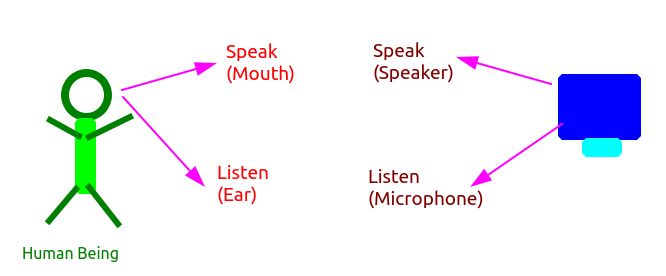
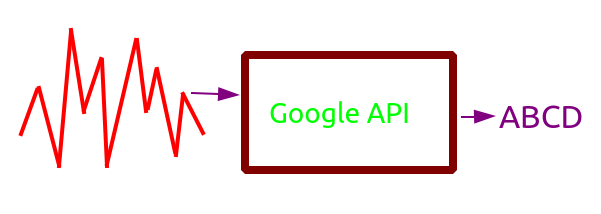
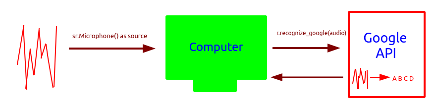
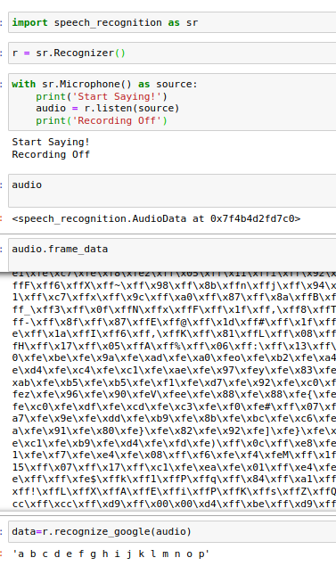
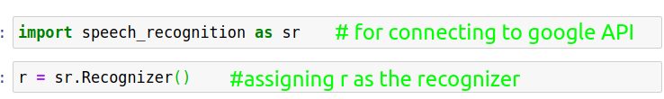
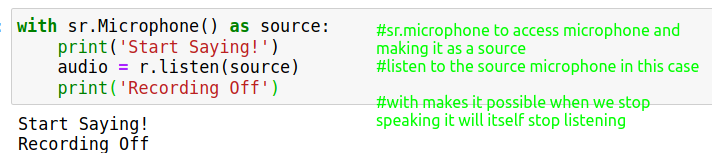
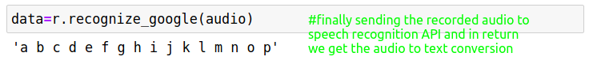

Plan
So we need add two functionality to our program
1) Listen our voice and do task
2) Respond in voice

So now we'll try to use python library so that when we speak computer hear it via microphone and do the task.
We'll use puaudio library for this
but again what computer hear is different frequecy in terms of graph like structure so we'll use google API to convert that frequency into english letters.

We'll use speechrecognition library to communicate with google API
Lets elaborate it...

Let's see the program

~~~~~~~~~~~~~~~~~~~~~~~~~~~~~~~~~
To understand bit by bit


